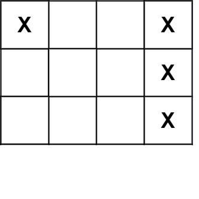

419. 棋盘上的战舰
一遍扫描只数「战舰头」：本格是 X 且上、左邻都不是 X 的格子恰是每艘战舰最左/最上的那格。
思路
- 不用 DFS 也不用改棋盘：战舰是一段横条或竖条，每段必有一个「头」——它的上方和左方都不是 X。
- 按行从左到右、从上到下扫，数这种头的个数就是战舰数；右/下方向的邻居不用看（那是头的延伸）。
- 边界用
i == 0、j == 0短路，不越界。
图解
最优解
1class Solution {2 public int countBattleships(char[][] board) {3 int ans = 0;4 // 一遍扫：只数「战舰头」——本格是 X，且上、左邻都不是 X5 for (int i = 0; i < board.length; i++) {6 for (int j = 0; j < board[0].length; j++) {7 boolean head = board[i][j] == 'X'8 && (i == 0 || board[i - 1][j] != 'X')9 && (j == 0 || board[i][j - 1] != 'X');10 if (head) ans++;11 }12 }13 return ans;14 }15}题目
给你一个大小为 m x n 的矩阵 board 表示棋盘，其中，每个单元格可以是一艘战舰 'X' 或者是一个空位 '.' ，返回在棋盘 board 上放置的 舰队 的数量。
舰队 只能水平或者垂直放置在 board 上。换句话说，舰队只能按 1 x k（1 行，k 列）或 k x 1（k 行，1 列）的形状放置，其中 k 可以是任意大小。两个舰队之间至少有一个水平或垂直的空格分隔 （即没有相邻的舰队）。
示例 1：

输入：board = [["X",".",".","X"],[".",".",".","X"],[".",".",".","X"]] 输出：2
示例 2：
输入：board = [["."]] 输出：0
提示：
m == board.lengthn == board[i].length1 <= m, n <= 200board[i][j]是'.'或'X'
进阶：你可以实现一次扫描算法，并只使用O(1)额外空间，并且不修改 board 的值来解决这个问题吗？
题面取自力扣当前版本。
数据快照 2026-11-04。题面版权归力扣所有，本站点仅供本人学习使用，请勿对外发布。